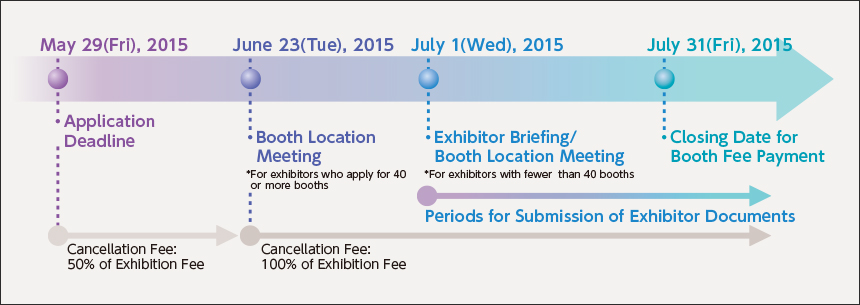

- Business Day
- 2015.9.17[Thu]-18[Fri]
- Public Day
- 2015.9.19[Sat]-20[Sun]
- Venue
- Makuhari Messe(Mihama-ku,Chiba,Jpan)


TOP For Exhibitor How to Exhibit/Application Form
How to Exhibit/Application Form
Application Form
To exhibit TGS2015, download the following PDF file.
Schedule

Rules Governing TOKYO GAME SHOW 2015
■Overseas Management Office (OMO)
- ・The OMO is the operating secretariat of TOKYO GAME SHOW 2015 organized by the organizer and co-organizer of the Show.
■Eligibility for Exhibiting in the Show
- ・Exhibitors are limited to companies and other organizations supplying products and services consistent with the purpose of the Show as set by the OMO. The OMO has the right to determine if any product or service is consistent with the purpose of the Show.
■Restriction of Exhibits and Products for Sale
- ・Exhibits are limited to those that meet the Ethical Rules of CESA. The exhibition of products related to software not in compliance with the Ethical Rules is prohibited.
- ・Promotion of software for consumer use is the content of activities of any exhibitor, in principle.
- ・Products not handled by exhibitors cannot be exhibited at the Show.
- ・Sales of products are allowed only in the Merchandise Sales Area, PC Game Area (except Turnkey Booth), and Cosplay Area (except Turnkey Booth)
■Regulations for Exhibit
- ・Each exhibitor must follow the instructions for booth decorations and structures, sound volume, exhibition contents and methods, manner of performance, etc. are defined in the "Exhibitors Manual" to be supplied by OMO.
- ・For booth decorations and structures, sound volume, exhibit contents/methods, manner of performance with no provisions in the "Exhibitors Manual", OMO has an authorization to cancel an exhibition, and each exhibitor must follow OMO instructions regardless pre and ongoing exhibition periods.
- ・Each exhibitor must ensure that its exhibit does not interfere with those of adjacent exhibitors. The OMO will determine, based on the Exhibitors Manual, whether an exhibitor is interfering with another exhibit or whether there is violation of rules, and the exhibitor is to comply with the OMO's determination.
- ・Each exhibitor must pay all the cost of amendments and cancellations of booth decorations/structures, sound volume, exhibition contents/methods, manners of performance, etc. caused by the instructions of OMO.
■Determination of Booth Location
- ・The location of booths will be determined at a booth location selection meeting to be held on June 23, 2015, (for exhibitors that applied for 40 booths or more) and June 1, 2015 (for exhibitors that applied for fewer than 40 booths).
- ・If the exhibitor will not be able to attend the booth location selection meeting, the exhibitor must entrust the booth location selection to the OMO in advance.
- ・Selection methods:
- In descending order beginning with exhibitors requesting a larger number of booths, exhibitors will be asked to select desired booth locations from among available booths, prepared by the organizer in advance, based on the number of booths.
- The selection order, if there are multiple exhibitors with the same number of booths, will be as follows:- 1. Exhibitors that participated in the preceding Show (TOKYO GAME SHOW 2014) and applied for booths before the application deadline.
- 2. Exhibitors that participated in the preceding Show but applied for booths after the deadline.
- 3. Exhibitors that did not participate in the preceding Show but applied for booths before the deadline.
- 4. Exhibitors that did not participate in the preceding Show and applied for booths after the deadline.
- 5. If there are multiple exhibitors in the above conditions, the member of Computer Entertainment Supplier's Association (CESA) has priority to select a booth location.
*Depending on the state of applications, there may be cases in which the selection method will be changed in advance. In that case, the OMO will send notification before the booth location selection meeting. - ・In the case of an exhibitor applying for 40 or more booth spaces, the organizer will assure the exhibitor of an island configuration (a layout without any adjoining booths).
- ・It is not possible to change the number of booths at the booth location selection meeting.
- ・If the number of booths cannot be accommodated during the booth location selection meeting, the exhibitor may have to adjust the number of booths requested in consultation with the OMO, or may be asked to change the depth-to-width ratio of the exhibition area, with the applied area being unchanged.
- ・The exhibitor cannot change the location of booths after their selection. However, there may be cases in which the location of the exhibitor's booth will be changed, based on the exhibitor's consultation with the OMO, due to a booth cancellation by another exhibitor, the addition of new booths or other reasons.
■Shape of the Booth Space
- ・The shape of the booth space (booth depth, ___ and booth width, ___ ) should be applied for by placing whole numbers in the appropriate spaces. (For less than 40 booths)・An exhibitor's space can be at most 8 booths in deep and in width. Aspect ratio has to be less than 1:3 in case of less than 8 booths in deep.
However, 1 booth in deep and 3 booths in width can be applied to exhibit.
(For 40 or more booths)・An exhibitor's space can be at most 7 booths in deep and maximum of 8 booths in width in the case of less than 7 booth in deep.
In case for exhibitor that applied for 49 booths or more, the shape of booth space should be applied to a multiple of 7 and 7 booths in deep. - ・To facilitate the overall Show site layout, an exhibitor with a booth space of a difficult shape may be requested to change its shape.
■Period
- ・The exhibitor must decorate its booth space during the preparatory period to be defined by the OMO, and complete the work before the opening of the Show.
- ・All exhibits and decorations shall be removed on the designated time by organizer.
- ・Exhibitors are not allowed to remove any portions or all of their exhibits during the SHOW exhibit time.
■No Subleasing
- ・Without the express permission of the OMO, an exhibitor may not transfer or sublease all or any part of its booth space (whether for payment or not).
■Fire Safety
- ・All exhibitors are required to adhere to all fire and safety rules and regulations that apply to the venue of TOKYO GAME SHOW 2015.
■Application and payment
- 1. Please fax or e-mail the application form to the OMO.
- 2. Upon receiving the application form, the OMO will issue an invoice for the exhibition fee.
- 3. You are requested to pay your exhibition fee in full within three weeks of the issuance of the invoice.
■Cancellation
- If an exhibitor cancels an application for any reason, or reduces the number of booths applied for, the following cancellation charge must be paid depending on the date of cancellation.
- ・From May 30 to June 22, 2015 / 50% of Exhibition Fee
- ・After June 23, 2015 / 100% of Exhibition Fee
■No Subleasing
- ・Without the express permission of the OMO, an exhibitor may not transfer or sublease all or any part of its booth space (whether for payment or not).
■Damage Compensation
- ・The OMO, regardless of the reason, will not be responsible for any personal injury or property damage (including that to the venue's facilities and fixtures) resulting from the use of the venue by the exhibitor, its employees or any others involved.
- ・The exhibitor, its employee or any others involved must immediately compensate for all damages, either intentional or accidental, inflicted on the venue's facilities and fixtures by its employees, representatives or any others involved.
- ・The OMO, regardless of the reason, shall not be responsible for any compensations associated with charge of decorations and structures, sound volume, exhibition contents/methods, manner of performance by the OMO instructions.
■Cancellation of the Show
- ・In the event that the organizer cancels TOKYO GAME SHOW 2015 for its own reasons, making it impossible for the exhibitors to use their contracted booths, the OMO will reimburse the space fees to the exhibitors at a daily rate, calculated by the number of days left in the Show. Apart from the foregoing, the OMO will not bear any liability for cancellation of the Show. ・The organizer / OMO will not be responsible for any damages inflicted on the exhibitor, whether direct or indirect, through force majeur or by command or instruction of a third party.
■Use of Personal Information
- ・The personal information given on this application is offered to the organizer and the co-organizer of TOKYO GAME SHOW.
- For further information
- Worldwide
-
TGS Overseas Management Office c/o Space Media Japan Co., Ltd.
5-1-2F Kojimachi, Chiyoda-ku, Tokyo 102-0083 Japan
Fax : +81-3-3512-5680
Phone : +81-3-3512-5670
E-mail : tgs@smj.co.jp
- Hong Kong
-
TGS Overseas Management Office c/o Nikkei Business Publications Asia Ltd.
Suite 1803, 18th Floor, Chinachem Exchange Square No. 1 Hoi Wan Street, Quarry Bay, Hong Kong
Fax : +852-2574-8175
Phone : +852-2575-8301
E-mail : events@nikkeibp.com.hk
- Taiwan
-
TGS Overseas Management Office c/o Service Industry Promotion Center, TAITRA
10F 333 Keelung Rd. Sec.1, Taipei, Taiwan
Fax: +886-2-2757-7261
Phone: +886-2-2725-5200
E-mail : georgechou@taitra.org.tw